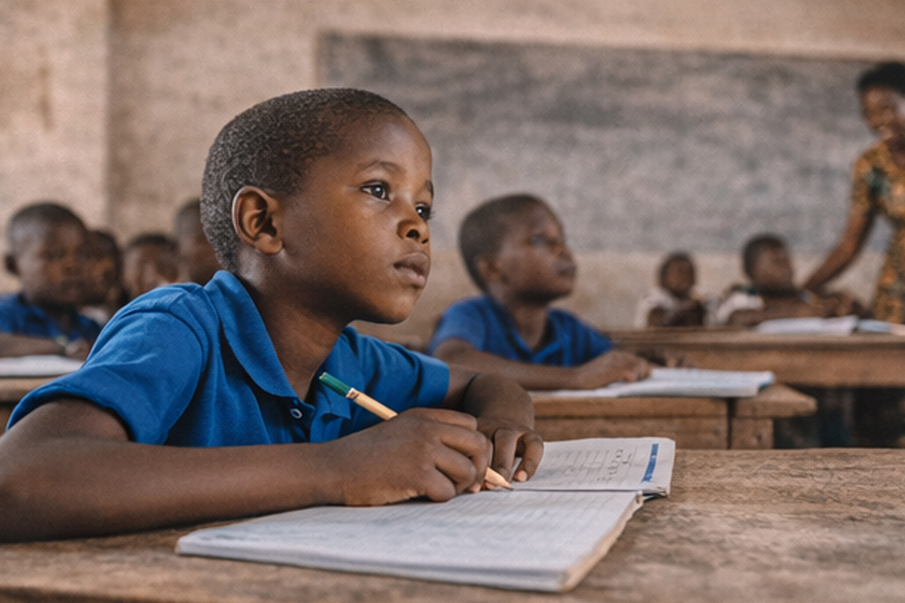

VISITE ÉDUCATIVE
De la théorie à la pratique : Apprendre autrement par l’observation et la découverte
Avril 2023

Dans le cadre de sa mission de promotion de l’éducation et de son engagement en faveur de l’épanouissement et du développement des enfants, l’Association des Femmes Actives pour le Développement Intégral (AFADI en sigle) a organisé une visite éducative au profit des enfants scolarisés.
Cette activité est née d’un constat simple : l’apprentissage scolaire ne peut être pleinement efficace lorsqu’il demeure exclusivement théorique. Les notions enseignées dans les salles de classe prennent davantage de sens lorsqu’elles peuvent être observées, expérimentées et reliées aux réalités de la vie quotidienne.
Notre société congolais souligne précisément la nécessité de « briser » la barrière entre les apprentissages théoriques et leur application dans la vie réelle, afin de permettre aux enfants de mieux comprendre et de concrétiser les connaissances acquises à l’école.
C’est dans cette perspective qu’AFADI a organisé une sortie éducative combinant la découverte de deux espaces essentiels de la vie économique et sociale : une ferme, lieu de production, et un grand marché, lieu de commercialisation et d’échange.
La visite a conduit les enfants successivement à la Ferme SABAGO et au Grand Marché de Kituku, leur permettant ainsi de suivre, de manière concrète, certaines étapes du parcours des produits alimentaires, depuis leur production jusqu'à leur présence dans les ménages.
Cette approche pédagogique a permis de transformer certains concepts enseignés à l’école en expériences concrètes, observables et compréhensibles.
Contexte
L’éducation constitue un moyen essentiel de développement individuel et collectif. Toutefois, apprendre ne consiste pas uniquement à mémoriser des définitions ou à restituer des connaissances. L’enfant doit également être capable de comprendre son environnement, d’établir des liens entre les connaissances scolaires et les situations de la vie réelle, de poser des questions, d’observer, de raisonner et de tirer ses propres conclusions.
Une visite éducative constitue à cet égard un outil pédagogique particulièrement intéressant.
Elle permet de sortir temporairement l’enfant du cadre traditionnel de la salle de classe et lui offre un environnement dans lequel les connaissances deviennent visibles et tangibles.
Par exemple, une leçon portant sur :
- l’élevage ;
- l’alimentation ;
- l’agriculture ;
- le commerce ;
- les circuits de distribution ;
- les métiers ;
- l’économie locale ;
- l’environnement ;
- l’aeronautique ;
- le trafique maritime ;
- l’hygiène et la sécurité alimentaire ;
peut être mieux comprise lorsque l’enfant rencontre directement les personnes, les animaux, les produits, les équipements et les espaces concernés.
La visite organisée par AFADI répond donc à une logique de pédagogie active, dans laquelle l’enfant n’est plus uniquement un récepteur de connaissances, mais devient un observateur, un questionneur et un acteur de son propre apprentissage
Déroulement
La visite à été faite en une journée en date du 15/04/2023 de 9h00’ à 15h’ avec une pause repas d’un heure, et le déplacement s'est déroulé selon l'organisation suivante :
- Point de rencontre des participants ;
- Départ en direction de la Ferme SABAGO ;
- Visite guidée et observations sur le site ;
- Séances d'explication et échanges avec les enfants ;
- Déplacement vers le Grand Marché de Kituku ;
- Découverte et observation du marché ;
- Explications sur l'organisation et les différents produits ;
- Mise en relation entre les informations reçues à la ferme et celles observées au marché ;
- Retour au point de rencontre.
Cette activité a réuni un total de 80 enfants (49 garçons et 31 filles) 4 encadreurs ainsi que 3 guides.
Cette composition a permis d’assurer l’accompagnement, l’encadrement, la sécurité et l’orientation des enfants tout au long de l'activité.
La participation des filles et des garçons constitue également un élément important de cette activité, car l'accès aux expériences éducatives et aux opportunités d'apprentissage doit bénéficier aux enfants sans distinction.
Objectifs stratégique
L’objectif stratégique de cette visite éducative était de “ rapprocher les apprentissages théoriques dispensés à l’école des réalités concrètes de la vie quotidienne, en permettant aux enfants d’apprendre par l’observation, la découverte et l’expérience. ”
Contribution de la Visite à l'apprentissage des enfants
Les visites éducatives présentent plusieurs avantages pédagogiques.
- Transformer les connaissances abstraites en connaissances concrètes : Un enfant peut retenir une définition dans un cahier sans nécessairement en comprendre profondément le sens.
L'observation directe permet de donner une réalité à cette définition. Voir une ferme, un animal, un marché ou un processus de production rend la connaissance plus concrète et facilite sa compréhension. - Favoriser l'apprentissage par l'expérience :La visite permet à l'enfant de voir → écouter → questionner → observer → comprendre → mémoriser → restituer. L'apprentissage devient ainsi multidimensionnel.
- Développer la curiosité : La découverte d'un environnement nouveau provoque naturellement des interrogations. Les questions des enfants constituent alors une opportunité pédagogique. une attention particulière a été accordée aux questions des enfants et leur a apporté des réponses pédagogiques accompagnées d'exemples et de concepts.
- Développer l'esprit critique : L'enfant apprend progressivement à ne plus seulement accepter une information, mais à demander : Pourquoi ? Comment ? D'où cela vient-il ? Qui intervient ? Quelle est la conséquence ? Que se passe-t-il avant ? Que se passe-t-il après ?
Cette capacité à questionner constitue une base importante de l'esprit critique. - Développer les compétences sociales : Une sortie collective permet également aux enfants d'apprendre à : respecter les consignes ; écouter les autres ; attendre leur tour ; travailler en groupe ; communiquer ; partager leurs observations ; respecter les lieux visités ; respecter les adultes et les professionnels rencontrés.
- Relier plusieurs disciplines : Une seule visite peut mobiliser plusieurs domaines d'apprentissage. La ferme et le marché peuvent ainsi servir de support à : la science ; la biologie ; l'agriculture ; l'éducation environnementale ; les mathématiques ; le français et l'expression orale ; l'éducation civique ; l'économie ; l'éducation nutritionnelle ; l'orientation professionnelle.
La visite éducative devient ainsi un espace d'apprentissage transversal.
Le "PLUS" apporté aux enfants par la visite
L'une des principales valeurs ajoutées de cette initiative réside dans le fait qu'AFADI a offert aux enfants une expérience d'apprentissage différente de l'approche traditionnelle.
- L'enfant n'a pas seulement entendu parler d'une ferme : il l'a visitée.
- Il n'a pas seulement appris ce qu'est un marché : il l'a observé.
- Il n'a pas seulement appris que le lait provient des animaux : il a découvert concrètement une étape de son extraction.
- Il n'a pas seulement entendu parler du parcours de la viande : il a pu observer certains maillons de cette chaîne.
Ainsi, AFADI a contribué à faire passer l'enfant :
- du livre à la réalité,
- de la théorie à l'observation,
- de l'observation à la question,
- de la question à la compréhension.
Leçons apprises
Plusieurs enseignements peuvent être tirés de cette expérience, et peuvent être resumer en quatre(4) points repartie comme suit :
- Première leçon : l'enfant apprend mieux lorsqu'il peut établir un lien entre théorie et réalité. Les connaissances scolaires gagnent en signification lorsqu'elles sont reliées à des situations concrètes.
- Deuxième leçon : la curiosité doit être considérée comme une ressource pédagogique. Les questions des enfants ne doivent pas être considérées comme des interruptions, mais comme des opportunités permettant d'approfondir l'apprentissage.
- Troisième leçon : l'environnement local peut devenir un espace d'apprentissage. La ferme et le marché sont deux exemples d'environnements ordinaires pouvant devenir de véritables salles de classe ouvertes.
- Quatrième leçon : apprendre peut également être une expérience de découverte et de plaisir. Une constatation a été et conclue que l'activité a constitué à la fois un moment d'apprentissage, de détente et de découverte, contribuant à stimuler la créativité et le désir de connaissance des enfants.
Conclusion
La visite éducative organisée par AFADI à la Ferme SABAGO et au Grand Marché de Kituku a constitué une expérience d'apprentissage particulièrement enrichissante pour les enfants participants.
À travers cette activité, 80 enfants, dont 49 garçons et 31 filles, ont eu l'occasion de sortir du cadre habituel de la salle de classe pour découvrir directement des réalités liées à la production, à l'élevage, à la transformation, à la commercialisation et à la consommation des produits. L'enthousiasme suscité par la découverte, les observations réalisées et les nombreuses questions formulées par les enfants ont donné à cette activité une dimension à la fois pédagogique, sociale et récréative.
La visite a surtout permis de rendre plus vivants certains enseignements théoriques. Les enfants ont pu comprendre, par l'expérience, qu'un produit présent dans leur maison ou sur leur table est généralement le résultat d'une chaîne composée de plusieurs acteurs et de plusieurs étapes. - La ferme leur a permis de découvrir le monde de la production et de l'élevage ; - le marché leur a permis de comprendre celui de la commercialisation et des échanges. Le rapprochement entre ces deux espaces a ainsi permis de construire une compréhension plus globale du parcours des produits.
AFADI réaffirme ainsi son engagement à contribuer, aux côtés des familles, des écoles et des communautés, à construire des expériences éducatives qui permettent aux enfants d'apprendre aujourd'hui pour mieux comprendre et transformer leur environnement demain.